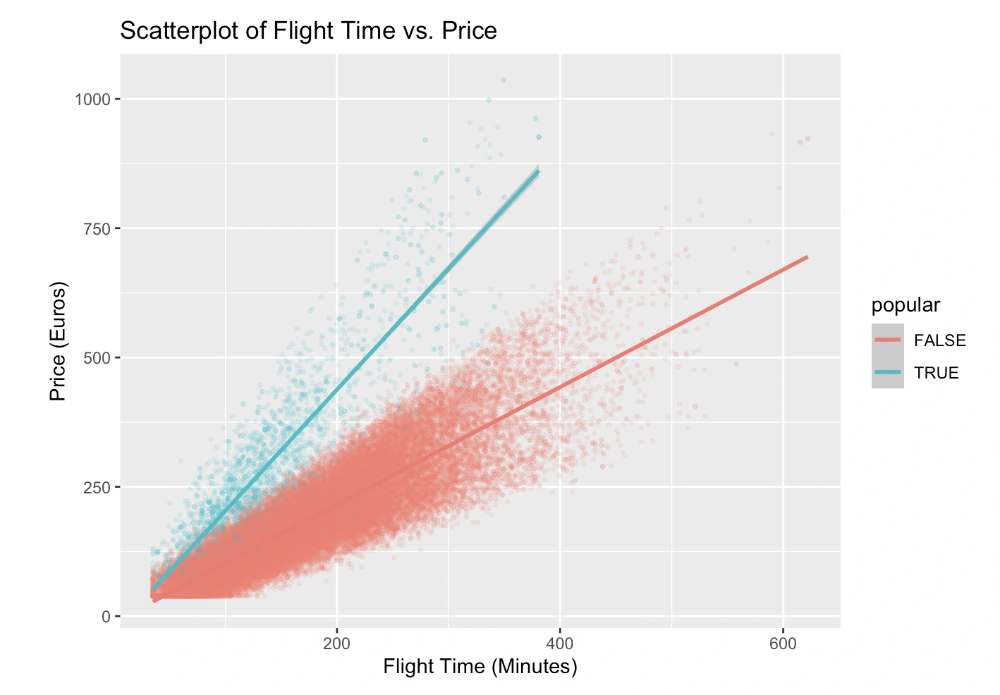

Statistical Computing · STAT 331 · 2026
European Airport & Flights Lab: Data Transformation in R
You’re in Melilla with €266 left. The direct flight home to London costs €526. Can two connecting flights get you there within budget?
My project partner and I designed a European travel lab for our statistics class. We chose the topic, built the flight dataset, wrote the exercises, and worked through the solutions in R. Each leg of the trip introduced a new decision: choose the shortest flight, stay within a distance limit, or find a connection that actually departs after you land.
Building Data That Could Support the Questions
We paired Eurostat’s 2013 GISCO airport records with synthetic flight records we created for the lab. The airport data supplied the geography. We used ChatGPT to help generate an R script for the schedules, durations, and fares, then iterated on the data until the trip and its constraints worked. This let us give students a solvable problem with known outputs they could check.
Cleaning the airport table mattered before we could answer even the first question. With dplyr, we filtered to publicly accessible, publicly owned airports, kept the location fields, and gave them readable names. Some airports lacked an IATA code, so we used their ICAO code as a fallback. We then joined the airport table twice: once to identify the departure city and again to identify the destination. An inner join meant the analysis kept flights whose endpoints both matched the cleaned reference table.
Writing One Function for Several Decisions
“Best” changed at each stop. From London, it meant the shortest flight to Italy. From Vergiate, it meant the farthest destination under 500 kilometers. We wrote a helper, desc_slice(), to select the highest or lowest values in a chosen column. Our options_table() function reused that logic and let the caller choose the columns to display. Tidy evaluation let us pass a column such as flight_time_minutes directly into the function.
We used kableExtra to highlight the first choice while keeping alternatives visible. This excerpt from the rendered solution shows why the sorting rule matters: the third flight cost less than the second, but duration determined the order.
| Destination | Flight time | Fare |
|---|---|---|
| Vergiate (LILG) | 110 min | €102 |
| Milano (LIMB) | 113 min | €246 |
| Milano (LIMB) | 117 min | €170 |
The next leg needed a new variable. We joined coordinates for both ends of each flight, calculated geodesic distance with geosphere::distGeo(), and converted meters to kilometers before applying the cutoff. Nevers came out first at 453.1 km.
Finding a Connection That Works
For the return trip, matching airports was only half the problem. Two cheap flights could share a layover airport even if the second one had already left. We used lubridate to work with UTC timestamps, added each first leg’s duration to its departure time, and joined the flights table to itself. A pair qualified only when the airports and cities matched and the onward flight left after arrival.
join_by(
dest_code == source_code,
destination_city == source_city,
layover_arrival_time < departure_time
)Adding the two fares and ranking the valid pairs found Melilla → QNJ → London Heathrow for €204. The first flight reached QNJ on June 12 at 02:26 UTC. The second left June 13 at 18:25 UTC. The traveler got home with €62 remaining, at the cost of a long layover. That distinction matters: our function ranked feasible routes by price, while a traveler in a hurry might rank those same rows by arrival time.
What Flight Time Explained About Price
Using lm(), we modeled ticket price in euros as a function of flight time in minutes across 52,052 simulated flight records. Each additional minute was associated with an estimated €1.14 increase in fare, and duration explained 70.3% of the variation in price. Those numbers describe the data we generated for this exercise.

The plot revealed something the single slope concealed. Within the overlapping range of flight times, the fitted fare rose faster for popular routes. Coloring by popular and fitting a line to each group made that difference visible. It also taught me to check where the data stop: the longest flights on this chart belong to the other group, so the figure gives me little basis for extending the popular-route trend that far.
What I Took Away
Writing the lab changed how I check an analysis. I can trace a result back to decisions that might otherwise stay hidden: which airports survived a join, whether a distance was in meters or kilometers, and whether a departure timestamp made a connection possible. Teaching those steps made me specify what each row represented and what would count as a correct answer.
The same habit carried into the regression. A single coefficient gave a useful summary, but plotting the underlying records helped me see when that summary was too broad. The part of this project I would carry into an analyst role is being able to show both the recommendation and the assumptions that made it rank first.
Back to Technical Projects